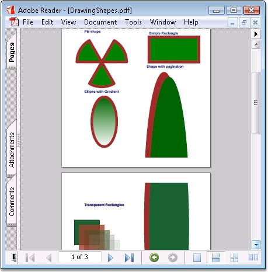

Essential PDF has a comprehensive set of APIs that can be used for drawing a variety of shapes such as,
· Rectangles
· Circles
· Arcs
· Curves and so on.
Shapes are filled by using different types of brushes like gradient brush, Tiling brush, and so on. Essential PDF supports drawing of shapes with different color spaces. Transparency of shapes can also be set.
PdfGraphics class allows drawing a wide range of primitives like
· Lines
· Curves
· Paths
· Text
For each such operation there is a set of methods like Draw<primitive>() (for example: DrawLine).
Each set of methods accepts parameters specific to each primitive type (for example: pen, brush, boundaries, etc.).
· If pen is used, the primitive will be drawn
· If brush is used, the primitive will be filled.
 Note: You must add the Syncfusion.Pdf.Graphics
namespace to work with graphic objects.
Note: You must add the Syncfusion.Pdf.Graphics
namespace to work with graphic objects.
The following code example illustrates how to draw shapes.
|
[C#]
//Draws polygon with pen and brush. PdfGraphics g = page.Graphics; PdfPen pen = new PdfPen(Color.Brown); PdfSolidBrush brush = new PdfSolidBrush(Color.Green); g.DrawPolygon(pen, brush, points); |
|
[VB.NET]
'Draws polygon with pen and brush. Dim g As PdfGraphics = page.Graphics Dim pen As PdfPen = New PdfPen(Color.Brown) Dim brush As PdfSolidBrush = New PdfSolidBrush(Color.Green) g.DrawPolygon(pen, brush, points) |
You can paginate the element as follows.
|
[C#]
PdfEllipse ellipse = new PdfEllipse(rect);
//Set layout property to make the element break across the pages. PdfLayoutFormat format = new PdfLayoutFormat(); format.Break = PdfLayoutBreakType.FitPage; format.Layout = PdfLayoutType.Paginate; ellipse.Brush = PdfBrushes.Brown;
//Draw ellipse. ellipse.Draw(page, 20, 20, format); |
|
[VB.NET]
Dim ellipse As PdfEllipse = New PdfEllipse(rect)
'Set layout property to make the element break across the pages. Dim format As PdfLayoutFormat = New PdfLayoutFormat() format.Break = PdfLayoutBreakType.FitPage format.Layout = PdfLayoutType.Paginate ellipse.Brush = PdfBrushes.Brown
'Draw ellipse. ellipse.Draw(page, 20, 20, format) |

Figure 38: PDF Document drawn with Shapes